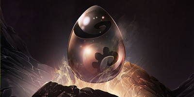

Tout d'abord nous allons vous montrer le site pour les chasses aux tresors il suiffira de cliquer sur l'image pour être rediriger vers le site.

Si vous cliquez sur cette image vous serez renvoyez vers un forum ou vous pourrez trouvez les coordonnées de mini donjons que vous pourrez faire que 1 fois pars jour.

En cliquant sur cette image vous serez renvoyer vers le site dofus pour les noob qui est un site ou vous pourrez trouver les solutions a vos donjons et quête.